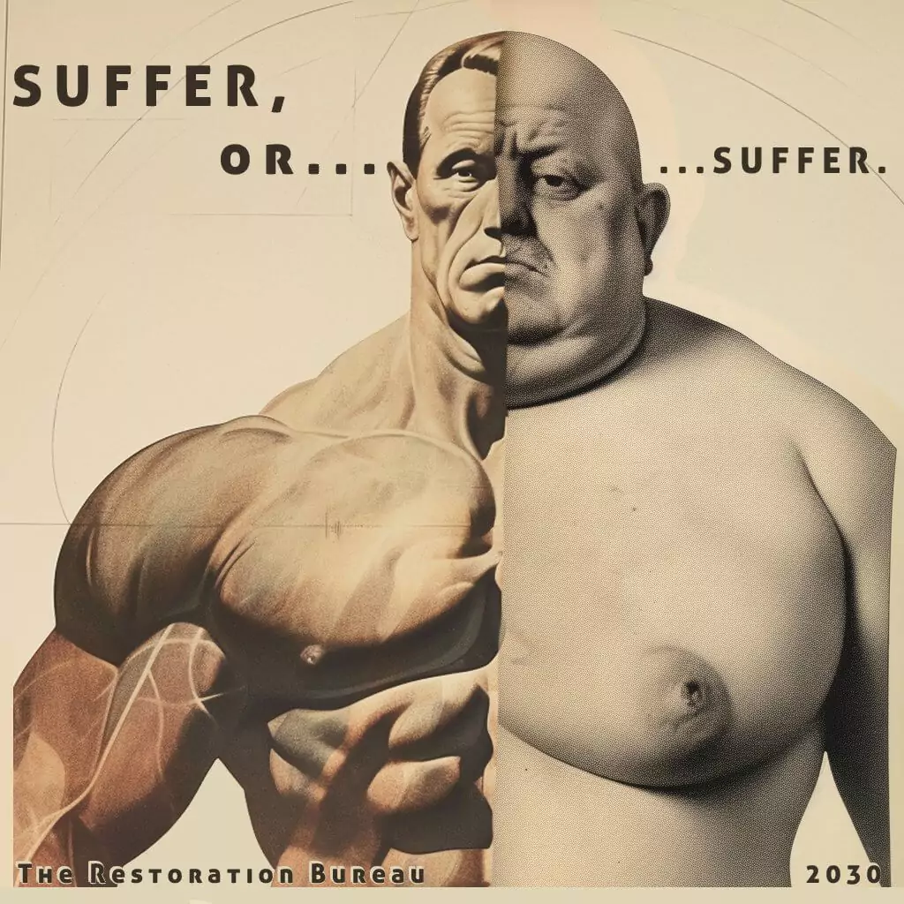
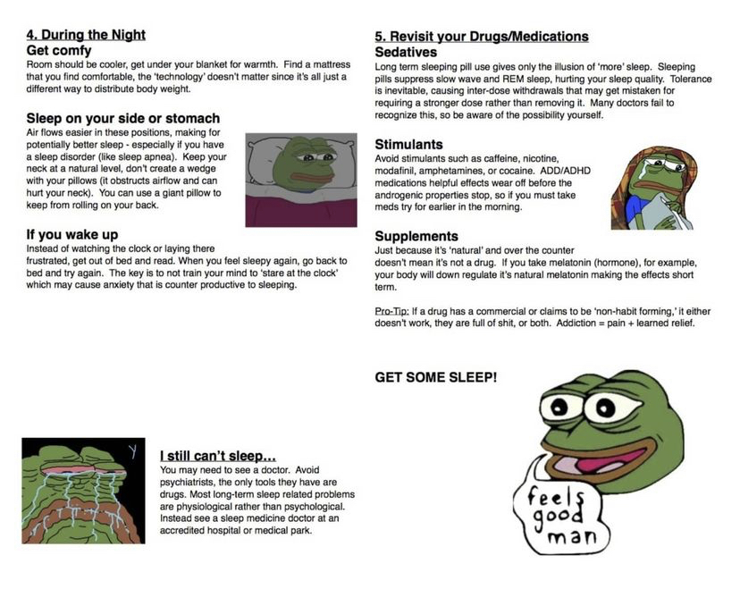

3.0 - Health and Fitness
"No citizen has a right to be an amateur in the matter of physical training. What a disgrace it is for a man to grow old without ever seeing the beauty and strength of which his body is capable." - Socrates
3.1 - Fitness
This guide is all you need. It is considered the best guide for health and fitness. If you want to know about mindset, diet, exercise, and everything else, then read the guide. It is mandatory.
Do not skip parts, read the whole thing. If you are still unsure about something, read it again.
The rest of this page will assume that you have read that guide and this page will only cover the few things that were not included in that guide.
3.2 - Plasticizers
Plasticizers for plastics are additives, such as phthalates, that give hard plastics like polyvinylchlorid (PVC) the desired flexibility and durability. Phthalate-based plasticizers are used in situations where good resistance to water and oils is required (>20 different compounds) Bisphenol-A is a dysfunctional building block of several important plastics and plastic additives. With an annual production of about six billion pounds of BPA worldwide, it is an important monomer in the production of polycarbonate.
Bisphenol-A
Bisphenol A (BPA) is a monomer used in the manufacturing of most polycarbonate plastics. It is known to leak from plastic food and drink containers spilling into foods and drinks and it may have highly negative impacts on human health as it "is an endocrine disruptor, which can mimic the body's own hormones and may lead to negative health effects," particularly sexual reproductive malformities and diseases since it can "function as a xenoestrogen by binding strongly to estrogen-related receptor)."
"In general, plastics that are marked with recycle codes 1, 2, 4, 5, and 6 are very unlikely to contain BPA. Some, but not all, plastics that are marked with recycle codes 3 or 7 may be made with BPA."
BPA is a xenoestrogen, meaning it mimics the effects of estrogen in the body. Xenoestrogens (or an abundance of natural estrogen) can cause unusual organ growth and may cause obesity. Needless to say, avoid phthalates as much as possible.
Some studies to look up on Bisphenol-A:
Phthalates
A phthalate is an anti-androgen and endocrine disruptor (testosterone blocker) that disrupts sex hormone production and interferes with sexual development in children and sexual behavior in adults. It is thought that phthalates play a significant role in the global drop of male fertility. It can cause a decreased length of pregnancy and an earlier puberty among girls. Avoid these.
Some studies to look up on Phthalates:
- Decrease in Anogenital Distance among Male Infants with Prenatal Phthalate Exposure
- Prenatal phthalate exposure and reduced masculine play in boys
- Effects of perinatal exposure to PCBs and dioxins on play behavior in Dutch children at school age
3.3 - Multivitamins and Nutrition
This is a large amount of information to take in, so don't get too caught up in the details.
What do the vitamins do?
- Vitamin A (Retinol): Retinol is a fat-soluble vitamin that is essential for vision, skin and mucous membranes, cell growth, reproduction, and normal immunity. The best sources of retinol are liver and fish liver oils. Beta-carotine - which is 1 of 500 some carotenoids and is a metabolic precurser of retinol (if ingested it is turned into retinol with a relatively poor yield) - is found in carrots and dark green leafy vegetables.
- Vitamin B1 (Thiamin): Thiamin is a water-soluble vitamin and so the body requires a daily supply of it in order to function optimally. Thiamin is connected in energy metabolism - particularly carbohydrate metabolism. Good sources are whole grains and fortified cereals.
- Vitamin B2 (Riboflavin): Riboflavin is a wats-soluble vitamin and so requires daily intake. Riboflavin is involved in energy metabolism. It can be found in meats, poultry, fish, and dairy products.
- Vitamin B3 (Niacin, Niacinamide): Niacin is a water-soluble vitamin. It functions as part of two enzymes, nicotinamide adenine dinucleotide (NAD), and with an additional phosphate, (NADP). They work in the glycogen energy cycle, the oxidation of fatty acids for energy, and in the tissue respiration. Best sources of niacin (and the precursor to niacin - tryptophan) are found in meats and fish. Athletes require more niacin than a sedentary person.
- Vitamin B5 (Pantothenic Acid): Another water-soluble vitamin, pantothenic acid forms part of conenzyme A, and part of one of the carrier proteins for the enzyme fatty acid synthetase. It is necessary for making glucose and fatty acids, and is also essential for making steroid hormones and brain neurotransmitters. Athletes require an excess of this vitamin compared to non-athletes.
- Vitamin B6 (Pyridoxine): Pyridoxine conenzymes function at all levels of protein and amino acid metabolism, and in making of hemoglobin and all new proteins. It is also essential for the enzyme glycogen phosphorylase that breaks down muscle glycogen for fuel. So the right amounts of this vitamin are important for athletes. Best sources are wheat germ, chicken, fish, and eggs.
- Folate: Folate forms part of vital transport coenzymes that control amino acid metabolism. Sources of folate are dark green leafy vegetables, legumes, and egg yolk.
- Vitamin B12 (Cyanocobalamin): Cobalaminforms part of coenzymes essential for all cells particularly rapid-turnover cells, including red blood cells, the lining of the gastrointestinal tract, and bone marrow cells. Sources for this vitamin are meat products.
- Biotin: Biotin forms two important enzymes necessary for gluconeogenesis and fatty acid synthesis. Sources are liver, sardines, and egg yolk. This is the last of the water-soluble b complex vitamins (all those mentioned thus far).
- Vitamin C (Ascorbate): Ascorbate is a water-soluble vitamin that has a role in forming collagen and acts as an antioxidant. Fruits are a source.
- Vitamin D (Cholecalciferol): This is a fat-soluble vitamin. It is essential for bone growth and mineral balance. It can be synthesized in the skin with the aid of sunlight. It is also present in fortified milk.
- Vitamin E (D-alpha-tocopherol): Vitamin E acts as an antioxidant. It can be found in vegetable oils, peanut butter, and some seeds.
- Vitamin K (Phylloquionone): It is essential for formation of prothrombin which is one of the compounds that enables your blood to clot. Green leafy vegetables are a good source.
- Choline: Choline is not technically a vitamin but it is important in energy metabolism and forms part of the neurotransmitter acetylcholine which is involved in anabolism and memory. Phosphatidyl choline is often mega-dosed in order to improve memory (more info specifically on this is in "the mind" section of this guide). Sources of choline are eggs, soybeans, and vegetables.
- Conenzyme Q10 (Ubiquinone): Essential for energy metabolism. A good source is in polyunsaturated vegetable oils.
- Calcium: Ending the vitamins and leading off for the minerals calcium is a component of bones, but is also an ion used for the conduction of nerve impulses and muscle contractions, and if not enough is consumed then bone will be stripped of calcium to make up the deficit. Good sources are dairy products and leafy green vegetables.
- Magnesium: Magnesium forms part of over 300 enzymes in the body so it is hugely important with many roles to play. Good sources are legumes and whole grains.
- Phosphorus: Another hugely important mineral involved in ATP (Adenosine Tri Phosphate (the powerhouse of the cell)) and creatine phosphate, it plays a huge role in the energy cycle. Good sources are meats, milk, fish, and whole grains.
- Sodium: Sodium, potassium, and chloride are the three main electrolytes in the body. Sodium is the main cation outside the cells. Sodium is an extremely important mineral.
- Potassium: Potassium is the main cation inside cells. It interacts with sodium and chloride in conduction of nerve impulses and a host of other essential functions. Mankind evolved on a high potassium/low sodium diet - which reflects the ratios present in natural and fresh (non-processed) foods like fishes and milk. Processing reverses the ratio in favor of sodium and so it is important to avoid processed foods for this reason.
- Chloride: Chloride is the main anion outside of cells. Chloride is often taken in accordance with sodium in table salt (sodium chloride).
- Iron: Irons forms part of hemoglobin and some enzymes. Sources of iron are meats, vegetables, and eggs.
- Zinc: Zinc forms part of many important enzymes - everything from cell growth to testosterone production. Even momentary deficiency halts muscle-growth. Good sources are meat, eggs, and seafood.
- Copper: Copper is involved in many enzymes such as noradrenalin. Good sources are organ meats and seafoods.
- Manganese: It is important for proper formation of bones and cartilage, normal glucose metabolism, and acts as an antioxidant. Good sources are whole grains and black tea.
- Chromium: Essential for glucose metabolism, insulin metabolism,fatty acid metabolism, and muscle growth. It can be found is meat, poultry, and seafood.
- Selenium: It works as an antioxidant by taking part in an free-radical attacking enzyme. Good sources are meats and seafood.
- Iodine: Iodine is necessary in the production of thyroid hormones. Good sources are iodized salt, sea salt, seafood, and even breathing in sea air will allow iodine incorporation.
- Molybdenum: Forms a part of several enzymes. It can be found in whole grains and legumes.
Multivitamins
Multivitamins/minerals must only show chemically that their label is accurate - that is, through high performance liquid chromatography they verify the presence of the ingredients on the label. This does not take into account bio-availability and it probably is the case that you are not receiving the good effects you paid for simply because you were unaware that the company opted to be cheap in the ingredients and assembly of the pill.
The first ingredient you need to look at is the vitamin B12. The reason this is the most important is because, 1) it's the most expensive component in the multi and, 2) it needs to be in high enough doses to be effective. B12 powers your nerves and liver function and you need a lot more than the government recommended amount (6mcg)
The cheap, inexpensive form of B12 is called cyanocobalamin. This is an inert form of B12 meaning that the cobalamin molecule has been stabilized with a cyanide molecule. This is bad because when your body has to metabolize it, it breaks it down, strips away the front end molecule (which is cyanide) and then you have to detoxify that cyanide.
So why is this bad? Because first you have to detoxify the cyanide and then it robs energy from your cells just to make it useful which is difficult if you are tired, stressed etc. Not ideal when cutting.
What you want to look for is a co-enzyme form of B12. Methylcobalamin and adenosylcobalamin. The methylcobalamin is exactly what your liver uses as methylation reactions which power a lot of your natural biochemistry. Adenosylcobalamin is used to assemble proteins in your body and is a key marker of aging. If you don't have enough adenosylcobalamin your body can't make proteins and ages much faster.
So why is this better? Well if you have a form of a vitamin that is exactly what your body uses then it goes right into your metabolism and does its job.
So what if it's a blend of methyl and cyano etc? Well, this is simply the company being deceptive. Methylcobalamin costs literally 10 times the amount as cyanocobalamin so the company wants to use as much as the cheap stuff as possible but still have the word methylcobalamin on their label so you think it's good quality.
Food based nutrients (vegetable supplements)
Lets look at chlorella first. What does it do? It absorbs toxins, metals and lead etc. Perfect if you eat a lot of tuna because it will help absorb/break down the mercury in the tuna. Quality all depends on where it's sourced. Does it come from the center of a lake or does it come from irrigation channels dug around the lake? Is it grown hydroponically? This is important because you don't want your chlorella to be laced with mercury and other crap when that's the reason you're taking it in the first place.
Minerals
All minerals are natural so that's not something to be worried about. What you want to look for is how the mineral is structured. So when a plant absorbs minerals and builds them into its structure we get organic minerals which are biologically bound in a way which is more compatible to how we, as humans, have evolved. Iron is a perfect example of this. If you're getting iron through your water for instance, that's going to be a highly reactive compound, potentially toxic and destructive to health. However, if you get iron from something like spinach, it's been structured with proteins and is in a form that your body knows what to do with it. So you want a form connected to proteins or a form biologically bound to something your body uses in its metabolism.
Magnesium
Magnesium is in short supply in our food and is a critical mineral to your health for your heart and muscles.
Magnesium oxide is the cheap form of magnesium. The oxide itself is oxygen generating compound so when your body has to use it, it strips the oxide from the magnesium before it can use it and now you have oxides in your system. So how do you get rid of oxides? You use antioxidants (vitamin c, vitamin e, beta carotene etc). Why on earth would you want to waste your antioxidants on something you just took for your health? Makes no sense at all. Inert forms of magnesium such as magnesium gluconate, which is a sugar containing molecule of magnesium, is about 10% magnesium and 90% glucose. Not at all what your body needs.
So what are the higher quality forms of magnesium? Magnesium bis-glycinate which is magnesium double bonded to the amino acid glycine. This is the most expensive form of magnesium you can buy. So what does it do? Well, it's absorbed as a food, it doesn't even need to bind to mineral receptors. This is good because if your body isn't working quite right or you have competition for mineral absorption it doesn't matter. Next, because it's bonded to glycine it goes to your liver to help detoxification and to your nervous system to help it relax. So the magnesium goes straight in with it. This is critically important in people who are fatigued because cells all over your body have to pump magnesium inside themselves. However, the pump needs magnesium to work in the first place so if you're deficient in magnesium and your pump doesn't work you can take magnesium oxide until you're blue in the face and none of it will make it to your cells because you can't get it there. So the best way to make magnesium is to chelate it with things that go into cells. We also have magnesium malate (malic acid). Malic acid is the best compound on earth for muscle fatigue. Perfect for athletes. It will delay the onset of lactic acid so great for cutting and doing cardio.
What should I look out for?
Amino acid chelate. This sounds great and it does absorb better but what is it? Well usually it's hydrolyzed soy protein and you still don't know what form of magnesium was bound to that soy protein. Some companies use calcium formate which is a chemical used to accelerate concrete hardening. Not good.
Forms of multivitamins
Capsules or tablets? Capsules break down easier and it's easier to absorb the nutrients in them. Vegetable caps are the best hands down because the vegetable fiber they are made of comes from a nice vegetarian source. Gelatin is fine too but there have been a few scares that they may contain mad cow disease (gelatin comes from beef). Overall though, not something to worry about. Tablets generally use a glue like substance to hold it all together. Usually this is dicalcium phosphate which sounds nice but it's essentially just a glue. Then you have to coat the tablet and companies generally use a colored coating which is intended to mask the smell. After that you need to glaze the tablet and companies use what's called pharmaceutical glaze (shellac) which comes from a bug. Tablets also tend to just run right through people due to the fact they are basically like a tiny piece of cement all glued together.
Best forms of vitamins
- Vitamin A: Full spectrum mixed carotene sources, Retinyl Palmitate.
- Vitamin C: Ascorbic acid, rose hips, Magnesium Ascorbate.
- Vitamin D: Cholecalciferol.
- Vitamin E: Mixed sources of Tocerpherols and Tocotrienols.
- Vitamin K: Menatetrenone.
- Vitamin B1: Benfotiamine.
- Vitamin B2: Riboflavin 5'-Phosphate.
- Vitamin B3: Inositol Hexanicotinate.
- Vitamin B5: Pantethine.
- Vitamin B6: Pyrodoxil-5-Phosphate or Pyridoxine Hydrochloride.
- Vitamin B12: Methylcobalin.
- Folic Acid: 5-Methyltetrahydrofolate.
- Magnesium: Magnesium Aspartate,
- Calcium: Calcium Hydroxyapatite (MCHC).
- Iron: Ferrous Fumarate or Iron Picolinate.
- Selenium: L-selenomethionine.
- Zinc: Zinc Picolinate.
What I think is a great way to get in all of your daily nutrients is to blend vegetables and fruits in a high-powered blender. I advise against juicing as it discards the cellulose and some potential phytochemicals. By blending you receive exactly what we are meant to accept.
I personally like the Vitamix blender. If you're going to spring for one you should definitely go for a quality and long-lasting blender. It's a worthwhile investment in my opinion. My preferred mix for one serving is:
- One whole leaf of kale.
- Two or three celery sticks.
- Half of an apple or peach or pear (Should be sweet).
- One third of a cucumber.
- A decent size chunk of ginger.
Some other nutritious underrated food items are:
- Hemp Seed - Possesses all essential amino acids and all essential omega fatty acids. High in protein, vitamins, and fiber.
- Rapini - High in protein and fiber. Possesses all amino acids. Possesses almost every vitamin and mineral.
- Quinoa - High in protein and carbohydrate. Possesses all amino acids. Rich in vitamins/minerals.
- Edamame - Great source of protein and fiber. Micronutrient dense.
Keep in mind that it's always best to get all your nutrients from whole foods themselves and that supplements and multivitamins should only make up for what you lack in nutrients from whole foods. Your diet should be built around nutritious, good food with supplements filling in the gaps rather than the other way around.
3.4 - Sleep
Have you ever wondered why you feel horrible waking up even though you had slept for over eight hours? This is because the length of sleep matters little compared to when you awaken in your sleeping cycle. When you sleep your brain-waves change in timed stages. There are four stages of sleep:
- Stage 1 Sleep - This is the type of sleeping that occurs in calculus class. Alpha and theta waves abound.
- Stage 2 Sleep - For about 20 minutes the brain produces wave bursts or sleep spindles. Body temperature drops.
- Stage 3 Sleep - Long delta brain-waves occur during this sleep. Waking up now will be unpleasant.
- Rapid Eye Movement (REM) Sleep - Muscle atonia or paralysis occurs, blood pressure rises, optical muscles twitch, vivid dreaming takes place.
An entire sleep cycle lasts for about 90-110 minutes depending on the person, and it typically goes through the stages like so: 1 - 2 - 3 - 2 - 4. Waking up at the end of a cycle or immediately after REM sleep will fill you with energy and optimism. So it's best to sleep in multiples of around 90. If you're going to bed at 12 for example then set your alarm clock for 1:30, 3:00, 4:30, 6:00, 7:30. Here is a bedtime calculator that will do this for you automatically.
Circadian rhythms are physiological responses to the times of day. As you near sleep for example the pineal gland will secrete an excess of melatonin. These rhythms can be controlled and pushed backwards and forwards by sleeping and waking at the same times repeatedly. Having a regular bedtime and waketime is a good idea. You don't necessarily have to go to bed at 10PM and wake up at 6AM but having a consistency to your sleeping pattern is important. LightBulb is a cool program that adjusts your computer screen brightness and color to reflect the sun and moon or the time of day.
I aim for nine hours of sleep and I sleep from 9PM to 6AM. An hour before I go to bed, 8PM, I shut off my electronic devices and do my nightly skincare routine, brush my teeth, and start reading at my desk.
If you have trouble going to sleep, check this guide out.
3.5 - Yoga
You might see the word yoga and think of middle-aged westernized women congregated in a large sweaty room in a YMCA, and then immediately discredit the practice. Yoga actually originates in ancient Hinduism, and it was and is used for physical, mental, and spiritual growth and development. If done properly it should be a meditative practice which works to improve balance, flexibility, posture, breathing control, and general well-being.
There are two main aspects of yoga. The most important are the yoga poses which are called 'asanas'. There are around 90 of them and each has a specific physical and mental benefit. The next aspect of yoga is the practice of controlled breathing which is dubbed the full yogic breath.
Some good yoga resources:
3.6 - Posture
Good posture is incredibly important, not just for appearing confident, but also ensuring your body functions properly. As a general rule, keep your shoulders back, your chin up, your mouth closed, and (when sitting) your feet flat on the floor.
Total body corrective routines:- Neanderthal No More - Part 1
- Neanderthal No More - Part 2
- Neanderthal No More - Part 3
- Neanderthal No More - Part 4
- Neanderthal No More - Part 5
- (De)-Constructing Computer Guy - Part 1
- (De)-Constructing Computer Guy - Part 2
- Push-Ups, Face Pulls, and Shrugs
- Heal that Hunchback!
- How to Improve Thoracic Spine Mobility
- The Weakest Link